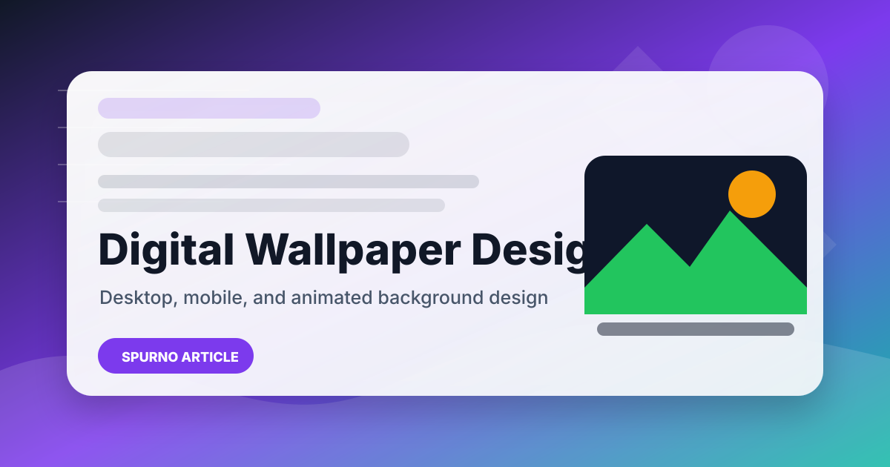

Digital Wallpaper Design: Complete Guide to Animated Wallpapers and Video Backgrounds

Digital wallpaper design transforms ordinary screens into personalized visual experiences. From static desktop backgrounds to dynamic animated wallpapers, the designs we choose for our devices influence mood, productivity, and visual comfort. In an era where screens dominate daily life, well-designed wallpapers have evolved from simple decoration to essential components of digital identity and brand expression. The growing demand for unique, high-quality digital wallpapers has created significant opportunities for designers and studios specializing in this medium. Explore our collection of background animation stock footage and motion graphics.
Why Digital Wallpaper Design Matters
Digital wallpapers personalize devices and digital spaces, reflecting individual style and brand identity. Quality wallpapers enhance the visual experience of any digital environment while serving practical functions that extend beyond aesthetics. Well-designed wallpapers can reduce eye strain through appropriate color temperature and contrast, create visual consistency across multiple devices, and strengthen brand recognition in corporate settings where every touchpoint matters.
The proliferation of multi-device ownership has fundamentally changed the wallpaper design landscape. Users now expect cohesive visual experiences across smartphones, tablets, laptops, desktops, smart displays, and even smartwatches. This convergence has created demand for design systems that scale across form factors while maintaining visual integrity. Designers who understand how to create wallpapers that work harmoniously across this ecosystem are increasingly valuable, offering both static and animated options that adapt to different display technologies and use contexts.
Design Categories
Digital wallpaper design encompasses several distinct categories, each suited to different contexts and user preferences:
- Abstract Patterns and Geometric Designs — Non-representational designs that create visual interest through color, form, and composition. Geometric patterns, gradients, and fluid shapes work well across all device types because they don't compete with interface elements. These are particularly popular for professional environments where sophisticated, non-distracting backgrounds are preferred.
- Nature-Inspired and Organic Textures — Landscapes, botanical patterns, water textures, and celestial scenes that create calming, immersive environments. Nature-inspired wallpapers can reduce stress and improve focus by providing visually soothing backgrounds that connect users to natural elements.
- Branded Wallpapers for Corporate Environments — Custom designs that reinforce brand identity through consistent use of logos, colors, and visual language across company devices. Branded wallpapers are increasingly used by organizations to extend their visual identity into employee and customer digital spaces.
- Minimalist and Dark Mode Wallpapers — Clean, restrained designs optimized for OLED displays with true black backgrounds that conserve battery life. Minimalist wallpapers prioritize function and clarity, making them ideal for productivity-focused users and professional settings.
- Seasonal and Event Wallpapers — Timely designs that celebrate holidays, seasons, or special occasions with appropriate themes and color schemes. These create engagement opportunities for brands and personal expression for individual users.
- Animated and Motion-Based Wallpapers — Dynamic backgrounds with subtle or dramatic motion that add dimension and life to device screens. Animated wallpapers have gained significant popularity as device capabilities and battery efficiency have improved.
Technical Considerations for Wallpaper Design
Creating wallpapers that look exceptional on every screen requires careful attention to resolution, aspect ratio, color space, and display technology. Desktop wallpapers typically need resolutions up to 5120x2880 for 5K displays, while mobile wallpapers must accommodate various aspect ratios from 16:9 to 19.5:9 and beyond. Designing at higher resolutions ensures sharpness across all display sizes and provides cropping flexibility for different aspect ratios.
Color space selection significantly impacts wallpaper quality. The sRGB color space remains the standard for web and digital display, while DCI-P3 provides a wider gamut increasingly supported by modern devices. Consider how wallpapers will appear on different display technologies including LCD, OLED, and AMOLED screens. OLED displays benefit significantly from true black backgrounds that reduce power consumption and create striking contrast ratios impossible on traditional LCD panels.
File format and compression also matter for wallpaper delivery. PNG provides lossless quality suitable for static wallpapers, while JPEG offers efficient compression for photographs and complex gradients. For animated wallpapers, MP4 with H.264 or H.265 encoding balances quality with file size, though newer formats like WebP and AVIF offer improved compression efficiency for supported platforms.
Animated Wallpaper Design
Animated wallpapers have gained significant popularity as device capabilities and power management have improved. Subtle motion adds depth and personality to screens without being distracting, creating a premium feel that static wallpapers cannot match. Common animation techniques include gentle parallax effects, slowly shifting gradients, floating particles, time-lapse sequences, and subtle environmental animations like falling leaves or flowing water.
When designing animated wallpapers, battery efficiency must be a primary consideration. Limit motion to low-frame-rate, lightweight animations that minimize GPU usage and power consumption. Video-based wallpapers require careful compression to balance visual quality with file size and playback performance. MP4 with H.264 encoding offers broad compatibility, while HEVC (H.265) provides better compression for high-resolution content on supported devices.
Consider providing both static and animated versions of each wallpaper design so users can choose based on their device capabilities and performance preferences. This dual-format approach maximizes your audience reach while ensuring optimal user experience across different hardware configurations.
Production Workflow
A professional wallpaper production workflow ensures consistent quality across devices and platforms:
- Determine Target Specifications — Identify the target device resolutions, aspect ratios, and color spaces before beginning design. Create a specification sheet that covers all intended platforms.
- Choose Color Palette and Design Direction — Select a color palette and design style that fits the intended use context and audience. Consider how the wallpaper will interact with common interface elements like icons, widgets, and dock areas.
- Create at Optimal Resolution — Design at the highest resolution needed, then scale down for smaller variants. This ensures sharpness on high-DPI displays and provides flexibility for aspect ratio adjustments.
- Design for Safe Zones — Account for interface elements that overlay the wallpaper — clock, widgets, dock, and notification areas. Central focal points should avoid these zones to maintain visual clarity.
- Export in Appropriate Formats — Export static wallpapers as PNG for lossless quality. For animated wallpapers, create MP4 with optimized compression settings that balance quality with file size and playback performance.
- Test on Actual Devices — Preview wallpapers on representative devices to verify appearance, color accuracy, and performance. Test both light and dark interface modes to ensure compatibility.
- Create Size Variants — Produce multiple resolution variants for different device categories. A comprehensive set might include desktop (5120x2880, 3840x2160, 2560x1440, 1920x1080), tablet, and mobile resolutions.
Brand Applications for Digital Wallpapers
Businesses increasingly recognize the value of branded wallpapers as an extension of their visual identity. Consistent wallpaper design across an organization reinforces brand recognition and creates a professional, cohesive digital environment. Wallpapers can incorporate brand colors, logo treatments, mission statements, and motivational imagery that employees interact with daily, creating constant brand reinforcement.
Customer-facing applications are equally valuable. Branded wallpapers for customer devices, social media backgrounds, and digital signage create additional touchpoints that strengthen brand presence. SPurno Animation Studio's wallpaper design expertise extends to custom branded solutions that maintain visual consistency across every digital surface an organization controls, from employee laptops to customer-facing displays.
| Recommended Specifications | |
|---|---|
| Desktop Resolution | 5120x2880 (5K) / 3840x2160 (4K) / 2560x1440 / 1920x1080 |
| Mobile Resolution | Various aspect ratios: 19.5:9, 20:9, 16:9 |
| Tablet Resolution | 2732x2048 (iPad Pro) / 2560x1600 (Android) |
| Color Space | sRGB (standard), DCI-P3 (wide gamut) |
| Static Format | PNG (lossless), JPEG (efficient) |
| Animated Format | MP4 (H.264/H.265), GIF (limited) |
Pros
- Personalizes devices and strengthens brand identity
- Animated wallpapers create premium user experiences
- Scalable design systems work across multiple devices
- Dark mode designs conserve OLED battery life
- Branded wallpapers reinforce corporate visual identity
- Dual-format options suit different user preferences
Cons
- Multiple resolution variants increase production time
- Animated wallpapers impact battery life on mobile
- Color accuracy varies across different display technologies
- Interface element safe zones limit design freedom
- Format compatibility varies across platforms
Verdict
Digital wallpaper design is a creative discipline that bridges art and technology. Whether creating static designs for personal expression or animated wallpapers for brand environments, understanding resolution, color, and technical constraints is essential for professional results. The growing ecosystem of devices and display technologies offers expanding opportunities for wallpaper designers who can deliver quality across form factors. Explore SPurno Animation Studio's wallpaper collection for professionally designed options that bring screens to life.